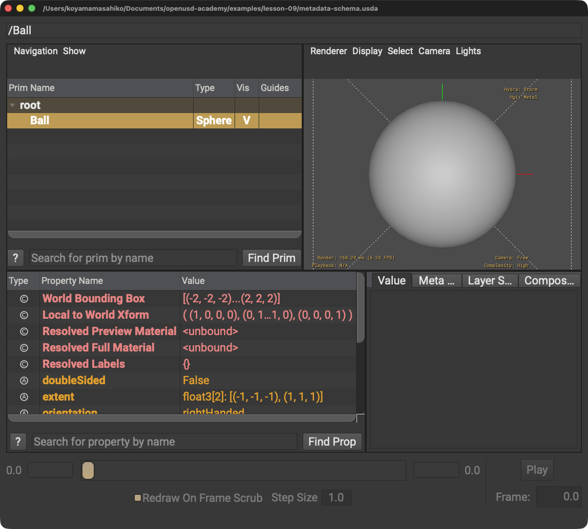

Metadataをアニメーションさせる
原因: Metadataは時間サンプルを持ちません。
解決策: 時間変化する値にはAttributeを使います。
STEP 12 · AUTHORING
補助情報とデータの設計図を分けます
今日これだけ
公式情報に基づく説明
MetadataはPrim・Property・Layerに付く名前と値の組で、時間サンプルを持ちません。Schemaはデータを記述・取得する構造化APIで、IsA SchemaとAPI Schemaがあります。
USDA
#usda 1.0
def Sphere "Ball" (
documentation = "学習用の球"
)
{
double radius = 2
}Prim名の後の丸括弧はPrim Metadataの範囲です。documentationがMetadataキー、引用符内が値です。SphereはIsA Schemaによる型、radiusはAttributeです。

SphereがSchema、選択したBallのMetadataタブでdocumentationを確認できます。Diagram
Python
from pxr import Usd, UsdGeom
stage = Usd.Stage.CreateNew("metadata-schema.usda")
ball = UsdGeom.Sphere.Define(stage, "/Ball")
ball.GetPrim().SetDocumentation("学習用の球")
ball.CreateRadiusAttr(2)
stage.Save()GetPrim()でSchemaオブジェクトからPrimを取得し、SetDocumentation()でMetadataを設定します。
USDA → Python mapping
USDA
def Sphere "Ball"↓Python
UsdGeom.Sphere.Define(stage, "/Ball")USDA
documentation = "学習用の球"↓Python
ball.GetPrim().SetDocumentation("学習用の球")Beginner notes
よくある間違い
原因: Metadataは時間サンプルを持ちません。
解決策: 時間変化する値にはAttributeを使います。
解決策: Schemaは主にデータモデルと解釈ルールを定めるものとして読みます。
Glossary
Official references
確認日: